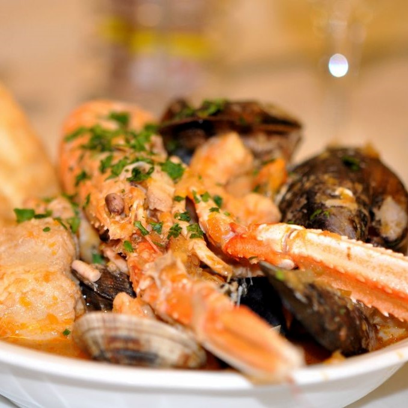
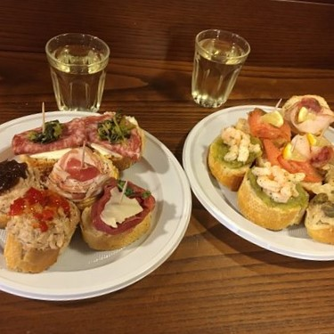
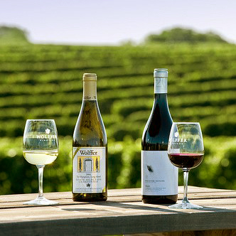
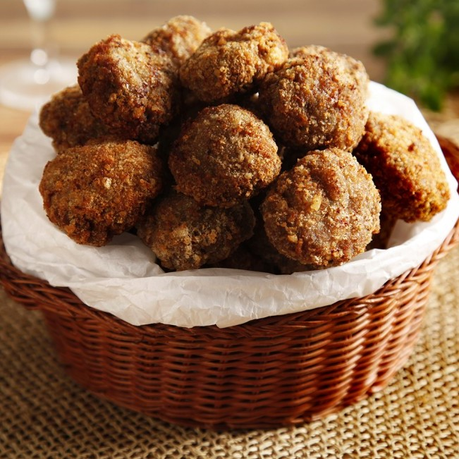
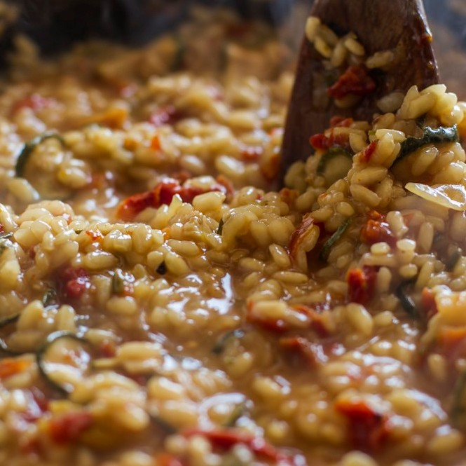
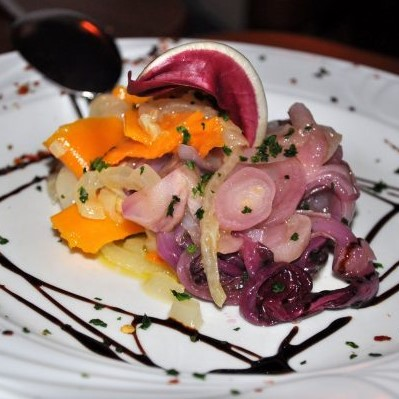

It is the most famous of the city's churches and one of the best known examples of Italo-Byzantine architecture.
For its opulent design, gold ground mosaics, and its status as a symbol of Venetian wealth and power, from the 11th century on the building has been known by the nickname Chiesa d'Oro(Church of gold) .During the 13th century the emphasis of the church's function seems to have changed from being the private chapel of the Doge to that of a "state church", with increased power for the procurators.
Doge's Palace
The Doge's Palace is a palace built in Venetian Gothic style, and one of the main landmarks of the city of Venice in northern Italy. The palace was the residence of the Doge of Venice, the supreme authority of the former Republic of Venice, opening as a museum in 1923. Today, it is one of the 11 museums run by the Fondazione Musei Civici di Venezia. Since 1996, the Doge’s Palace has been part of the Venetian museums network, which has been under the management of the Fondazione Musei Civici di Venezia since 2008.
Rialto Bridge
The Rialto Bridge was the first to span Venice’s Grand Canal (Canal Grande) between its two highest points above sea level. Today, the bridge is among Italy’s most famous, carrying an endless stream of tourists and locals.
The Rialto is one of the most famous landmark bridges in Europe, and a popular and crowded Venice attraction connecting the San Marco district, home of St. Mark's Square, to the San Polo district, where Venice's famous fish market has stood for 700 years
Grand Canal
So called the “Canalazzo“, is the most important waterway of Venice, about 3800 meters long, it splits the city in two sides...
Venice from above looks like a big fish, not bad for a city on the sea! The Grand Canal it's like a thick dark line that creates a kind of "big S" inside the fis
This “street” was the centre of the trades of the Republic since the Middle Age. Here ships (somewhere over 400 tons) used to sail by: in fact, it is right on the Grand Canal that the “Fondaci” were born. They were a sort of big warehouses and inns for merchants coming from every part of the world.
The Grand Canal was, and still is, the most ambitious place to live.
THINGS TO DO WHILE YOU ARE IN VENICE
Choose an activity
City tour ( personal tourist )
Fancy restaurants
5-stars accommodation
Private Gondola ride
City tour ( personal tourist )
Fancy restaurants
5-stars accommodation
Private Gondola ride
City tour ( personal tourist )
Fancy restaurants
5-stars accommodation
Private Gondola ride
City tour ( personal tourist )
Fancy restaurants
5-stars accommodation
Private Gondola ride
6 DISHES YOU MUST TRY WHEN YOU ARE IN VENICE:

Sea food
Nothing defines Venice's cuisine like its seafood. No meal is complete without some sea creatures as the fruitful harvest from the surrounding lagoon and the nearby sea washes onto the plate.
A few silvery anchovies on a square of polenta or some grilled razor clams, pencil-thin and nestled in their pale shells, whet the appetite today as they did centuries ago. Risotto or pasta may be tossed with the inevitable cuttlefish or squid, dark with ink or not, to be followed by meaty monkfish perhaps, or trout from mountain streams in the Alto Adige. If there were a way to serve fish for dessert, Venetians would do so gladly.

Wine of Veneto
The region of Veneto has an ancient wine tradition and it is currently one of the most important areas in Italy for wine production. Thanks to morphological features of the region, delicious grapes are grown here, and wineries aim to to guarantee the development of a high quality and varied wine production.
The production of wine grapes is one of the main activities aimed at growing the agricultural economy of this region. It also has an important role at a national level.

Cicchetti
are small snacks or side dishes, typically served in traditional "bàcari" (cicchetti bars or osterie) in Venice, Italy. Common cicchetti include tiny sandwiches, plates of olives or other vegetables, halved hard boiled eggs, small servings of a combination of one or more of seafood, meat and vegetable ingredients laid on top of a slice of bread or polenta , and very small servings of typical full-course plates

Polpette
Classic Italian polpette are made with ground beef or veal;
Polpette in most region of Italty are often just fried and eaten as is—as a snack or served as a second course—without any sauce or topping. Italian meatballs are often quite elaborate all by themselves. For example, some polpette recipes recommend adding various ingredients into the raw ground meat—such as, finely chopped mortadella or salame, or a bit of béchamel sauce (if you have any left over from other preparations).

Sarde in saor
This is one of our favorite Venetian dishes, but it isn’t for everyone. It’s an antipasto that, at its most basic, features sweet-and-sour sardines with onions, pine nuts and raisins. It’s briny, salty, delicately sweet, and intensely savory – one of the more uniquely-flavored dishes in mainland Italy. The recipe apparently originated among fishermen who used vinegar to preserve fish that they took out onto the boats with them to eat. Although you’ll find more variation in the dish these days, it’s still bracingly simple and relies on very fresh fish and good onions.

Risotto
Rounding out the holy trinity of Italian starches is rice, which is often eaten as the creamy, luxurious risotto. The most famous type of risotto is probably the saffron-infused risotto alla milanese, which was invented, according to legend, by the workmen building the Milan Cathedral who were using saffron to dye the stained glass windows and figured they would also throw it into their rice. Other classic versions of the dish include risotto al nero di sepia (with cuttlefish and ink) and risi e bisi (with pancetta and peas), both of which hail from Venice.